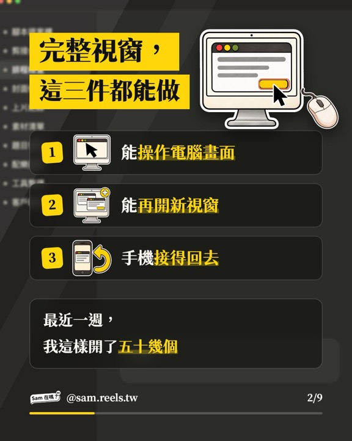

人在外面，手機打一句話
電腦自己開 Claude Code
開出來的是電腦版完整視窗，手機還接得回去。

開始前要有
- 一台 Mac，裝好 Claude 桌面 App，能打開「Code」分頁。
- Claude 付費方案（Pro 以上）。手機和電腦的 Claude App 要登入同一個帳號。
- 終端機版 Claude Code。打開 Mac 的「終端機」，輸入
claude --version，看到版本號就代表裝好了。還沒裝的話，請電腦上的 Claude 幫你裝。 - 終端機裡的
claude要用同一個 Claude 帳號登入過一次。用 API 金鑰登入會另外計費。 - 在桌面 App 的 Code 視窗打開「遠端控制」，先確認手機 Claude App 的 Code 列表看得到這個視窗。
- 想讓新視窗操作電腦畫面，先在 Mac 上開好 Claude 操作電腦需要的權限。
步驟一｜在電腦裝開窗小程式
這段會做什麼
Claude 會在 Mac 上新增一支開窗小程式，先備份 Claude 的設定檔，再到檔案最後加一段開窗規則。
想復原：請 Claude 刪掉這支小程式，再把設定檔換回備份。
這是官方沒公開的做法，Claude App 改版後可能會失效。
Claude 會在 Mac 上新增一支開窗小程式，先備份 Claude 的設定檔，再到檔案最後加一段開窗規則。
想復原：請 Claude 刪掉這支小程式，再把設定檔換回備份。
這是官方沒公開的做法，Claude App 改版後可能會失效。
在電腦上開一個 Claude Code 視窗。下面這段是給 Claude 看的，整段複製貼上就好。
貼給電腦上的 Claude
幫我裝「手機叫電腦開視窗」：
1. 建一個檔 ~/.claude/tools/開桌面視窗.sh，內容如下，存好後 chmod +x：
#!/bin/sh
# 手機遠端連進來時，App 不讓 AI 直接開新視窗；這支在電腦上開一個桌面 App 視窗，手機看得到。
# 用法：sh ~/.claude/tools/開桌面視窗.sh "<資料夾完整路徑>"
DIR="$1"; [ -d "$DIR" ] || { echo "資料夾不存在：$DIR"; exit 1; }
CL=$(command -v claude || ls "$HOME/.local/bin/claude" 2>/dev/null || ls "$HOME/.claude/local/claude" 2>/dev/null)
[ -n "$CL" ] || { echo "找不到 claude 指令：要先裝終端機版 Claude Code"; exit 1; }
U=$(uuidgen | tr A-Z a-z)
cd "$DIR" && "$CL" -p "這是新開的視窗，下一則才是交代。只回：收到" --session-id "$U" --model haiku >/dev/null 2>&1 || { echo "建立失敗"; exit 1; }
open -g "claude://resume?session=$U"
sleep 3
echo "local_$U"
2. 在 ~/.claude/CLAUDE.md 最後加一段（原本的內容不要動，改之前先備份成 CLAUDE.md.bak）：
## 手機叫電腦開視窗
我從手機連回電腦，請你開新視窗時，App 會擋。請改跑 sh ~/.claude/tools/開桌面視窗.sh "<資料夾完整路徑>"，它會印出新視窗編號。
先打開新視窗的手機連線（遠端控制）。把新視窗的模型設成跟你一樣，改好標題，再把我的原話傳過去。
如果新視窗卡在等我按「允許」，就跟我說。不要叫我回電腦自己開。
3. 裝好跑一次測試：sh ~/.claude/tools/開桌面視窗.sh "$HOME"，看電腦上的 Claude App 左邊的視窗列表有沒有多一個視窗，跟我說結果。
裝好後，看電腦上 Claude App 左邊的視窗列表，有沒有多一個視窗。
裝好後，先開一個新的 Code 視窗、打開「遠端控制」，再用手機連進去。Claude 只會在視窗一開始讀設定檔裡的規則。
第一次從手機試，建議先建一個空白的「開窗測試」資料夾來試。
步驟二｜在手機請 Claude 開新視窗
打開手機上的 Claude App，從 Code 列表連回電腦的視窗，輸入：
「幫我開一個新視窗，做○○」
把○○換成你要它做的事。第一次可以說：「幫我在『開窗測試』資料夾開一個新視窗，請它回我一句『測試成功』」
把○○換成你要它做的事。第一次可以說：「幫我在『開窗測試』資料夾開一個新視窗，請它回我一句『測試成功』」
步驟三｜用手機接回新視窗
電腦開出新視窗後，回到手機的 Code 列表。看到新視窗就點進去，可以看它有沒有收到你的交代，也能繼續跟它說話。
先講清楚
- 目前只在 Mac 上測過。
- 電腦要開著、不能睡著，手機才連得回去。
- 新視窗用一般權限。碰到需要按「允許」的地方，手機上會跳出提示，你按了 Claude 才會繼續。
- 開新視窗時，Claude 會先只回一句「收到」，用量很少。
有問題，私訊 @sam.reels.tw。